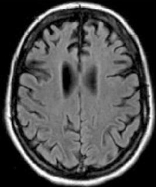

What is the most likely diagnosis?
What condition may be associated with this disease?
Which investigation would NOT be appropriate to perform for this patient?
|
 |
|
Which of the following is NOT part of the management of this disease & its complications?